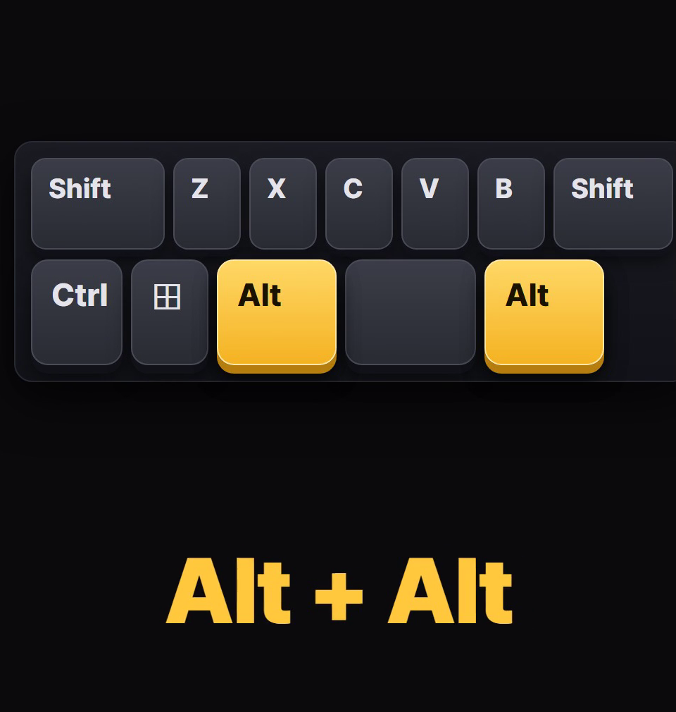
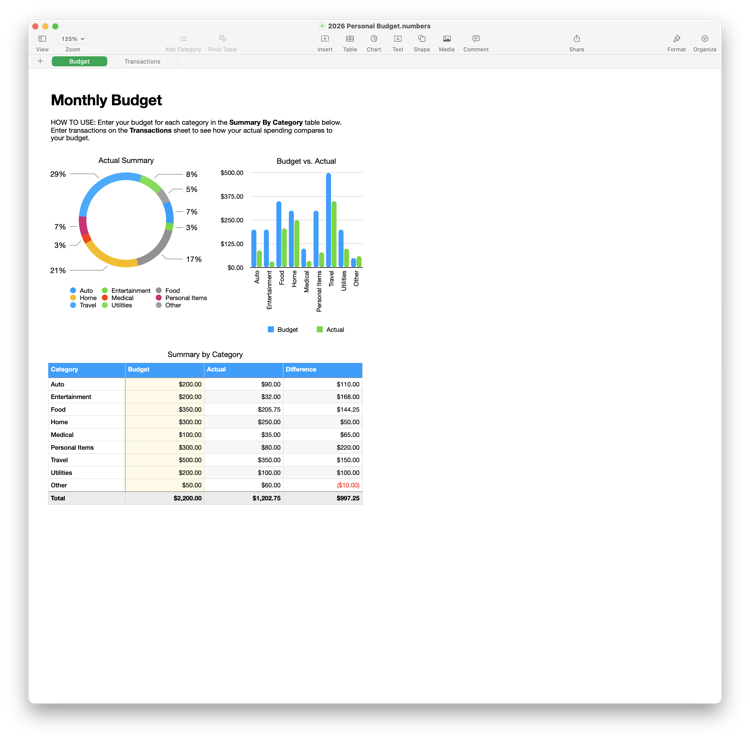
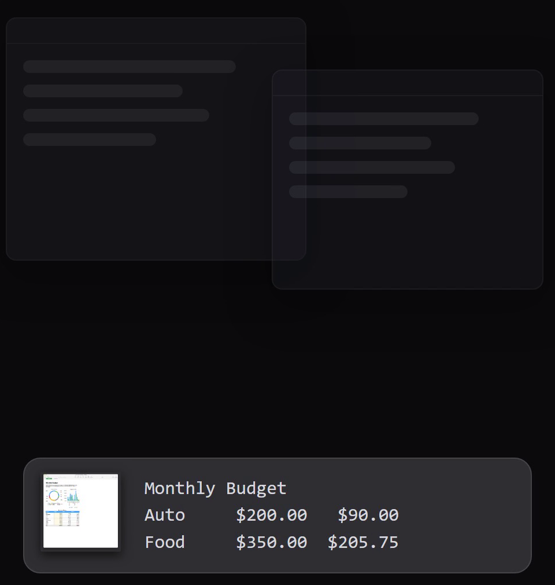
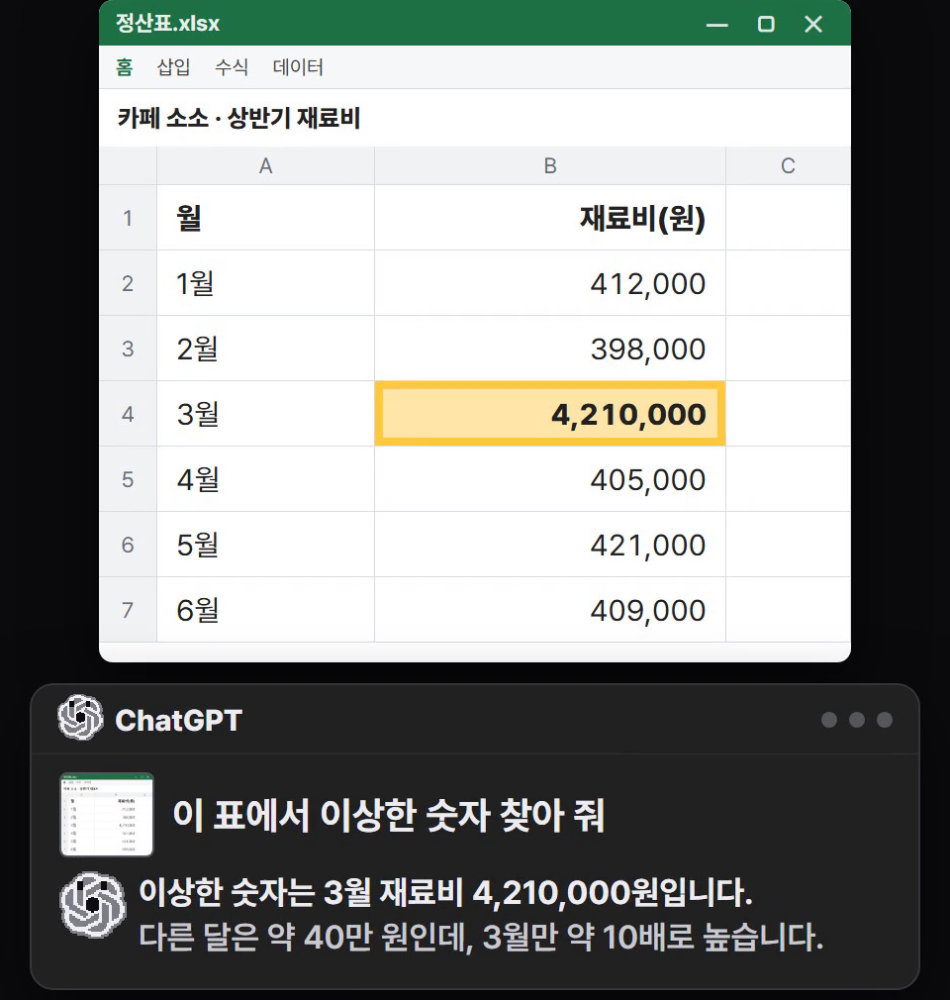
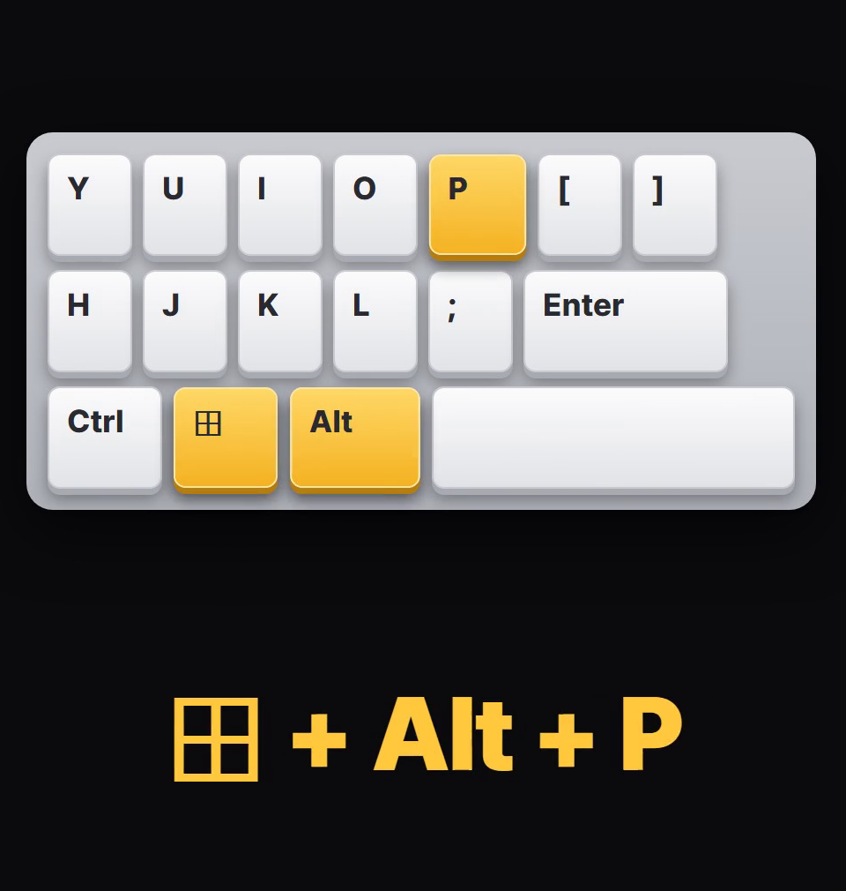
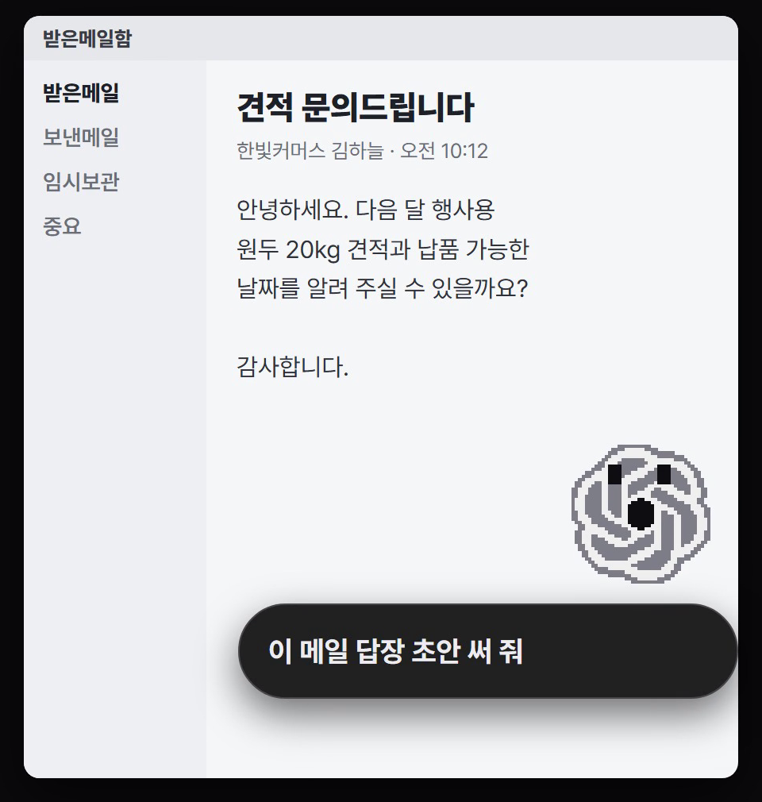

챗GPT 데스크톱 앱(윈도·맥)에는 지금 보는 화면을 통째로 넘기는 '앱샷'과, 어느 창 위에든 뜨는 작은 입력창이 단축키로 들어 있어요. 복사하고 캡처하고 설명하지 않아도 화면째 물어볼 수 있어요. 이 정리본은 OpenAI 공식 문서(learn.chatgpt.com, 11/7 확인) 기준이에요. 아래 화면은 공식 문서 내용대로 다시 그린 그림이고, 정산표는 시연용으로 만든 가짜 표예요.
물어보고 싶은 창(엑셀·한글·메모장 등)을 맨 앞에 띄워 두고, 키보드 스페이스바 양옆의 Alt 두 개를 동시에 눌러요. 맥은 양옆 Command(⌘) 두 개예요. 윈도에선 메인 ChatGPT 앱에 새 대화가 열려요.

맨 앞 창 하나만 넘어가요. 보이는 창의 그림 한 장 + 그 앱이 내주는 글자(스크롤해야 보이는 아래쪽 글자가 들어갈 때도 있어요). 구글 문서·Gmail·구글 시트·구글 슬라이드 같은 웹 앱은 보이는 화면 그림만 넘어가요(공식 문서).


붙은 화면에 대해 묻거나 시킬 일을 적어요. 예: '이 표에서 이상한 숫자 찾아 줘'. 시연용 정산표(1~6월 재료비, 3월만 4,210,000원)를 그림+글자로 GPT에 보냈을 때 나온 답: '이상한 숫자는 3월 재료비 4,210,000원입니다. 다른 달은 약 40만 원인데, 3월만 약 10배로 높습니다. 421,000원을 잘못 입력한 것인지 원본 내역을 확인해 보세요.'(OpenAI API로 보낸 답이에요. 데스크톱 앱 화면은 아니에요.)

다른 앱을 쓰던 화면 그대로, 단축키를 누르면 작은 입력창(캐릭터와 함께)이 다른 창 위에 떠요. 바로 글로 치거나 말로 시작할 수 있어요. 한 번 더 누르면 입력칸으로 커서가 가요. 캐릭터가 '작업 중·입력 필요·완료·막힘' 상태를 보여 줘요. 캐릭터 없이 입력창만 쓰려면 설정에서 'Mini'를 골라요(공식 문서).


앱샷 단축키는 ChatGPT 설정에서 원하는 키로 바꿀 수 있어요. 빠른 입력창 단축키는 설정 › Keyboard shortcuts(키보드 단축키)에서 바꿔요(공식 문서).
숫자 표를 맨 앞에 두고 앱샷
이 표에서 이상한 숫자 찾아 줘
에러 메시지 창을 앱샷
이 오류가 왜 났는지, 내가 뭘 누르면 되는지 순서대로 알려 줘
읽던 문서 창을 앱샷
이 문서 핵심만 세 줄로 정리해 줘
헷갈리는 프로그램 설정 창을 앱샷
이 화면에서 ○○을 하려면 어디를 눌러야 해?
도움이 되셨다면
@ai.antenna.kr
에서 바로 쓰는 AI 활용법을 계속 올립니다.